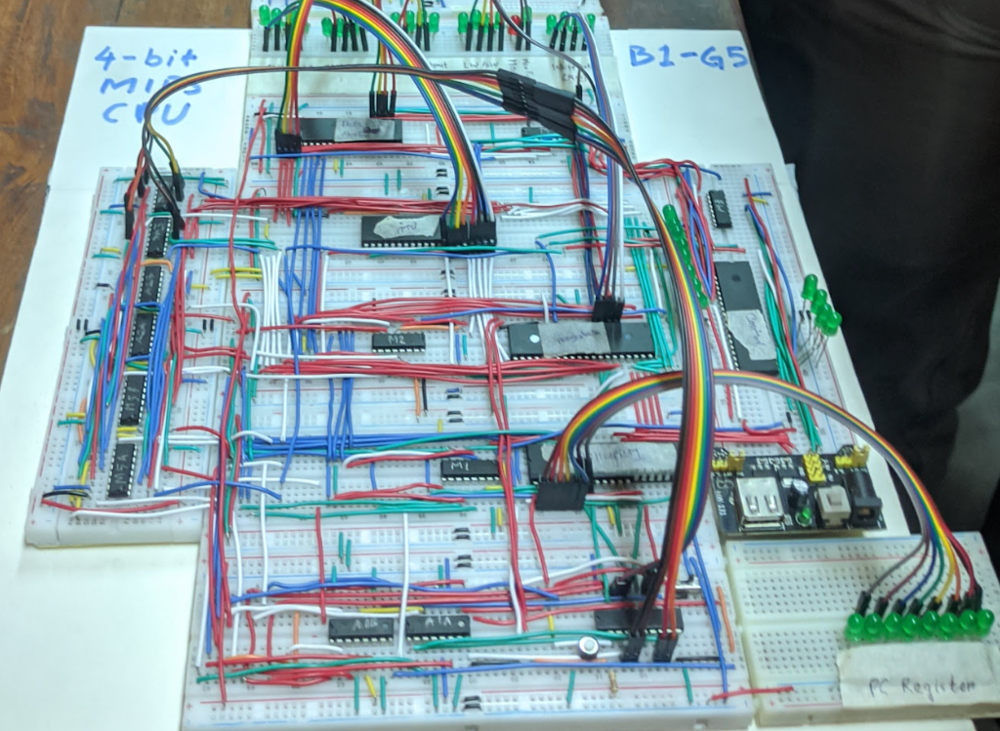
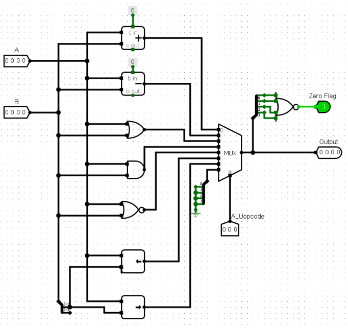
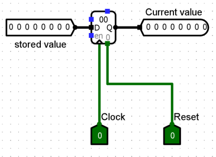
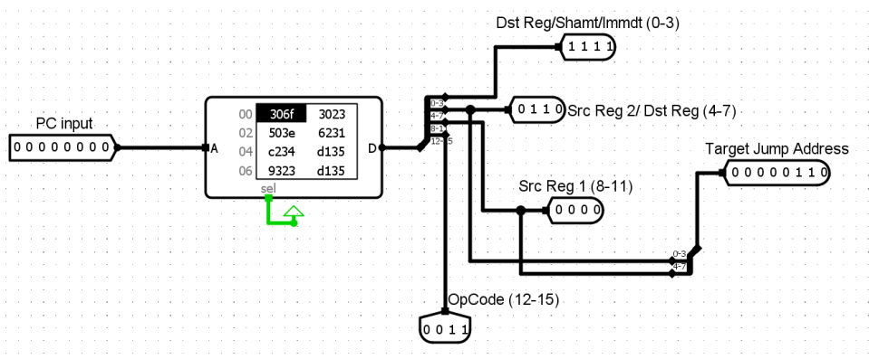
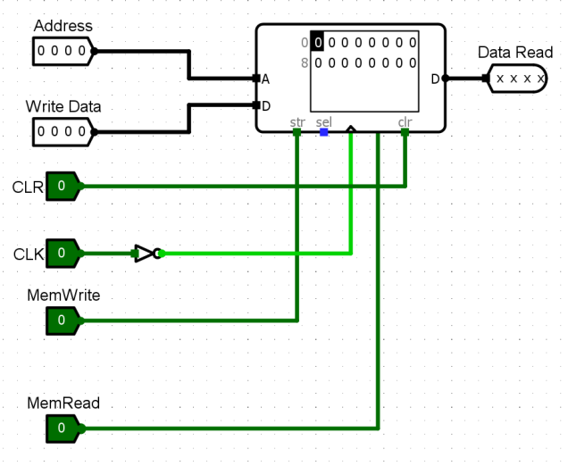
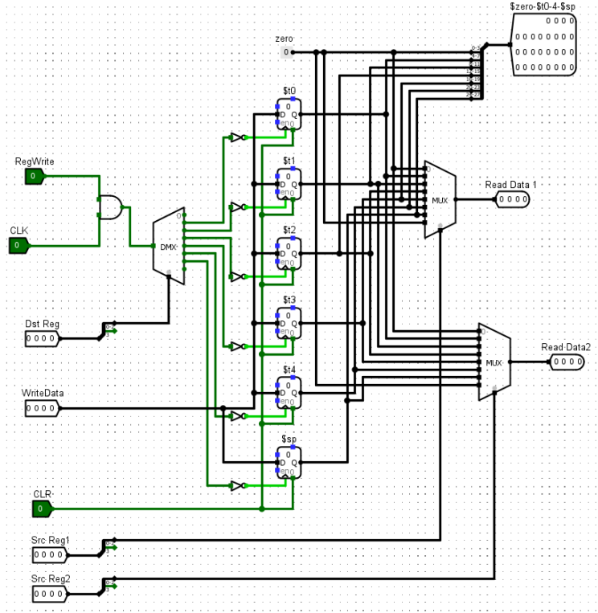
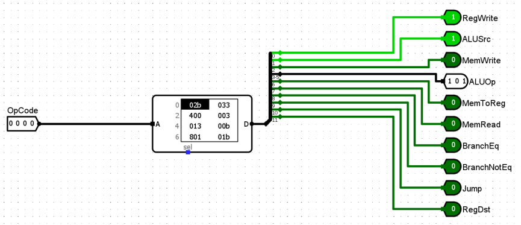
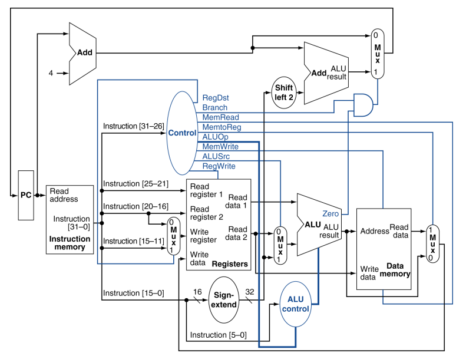
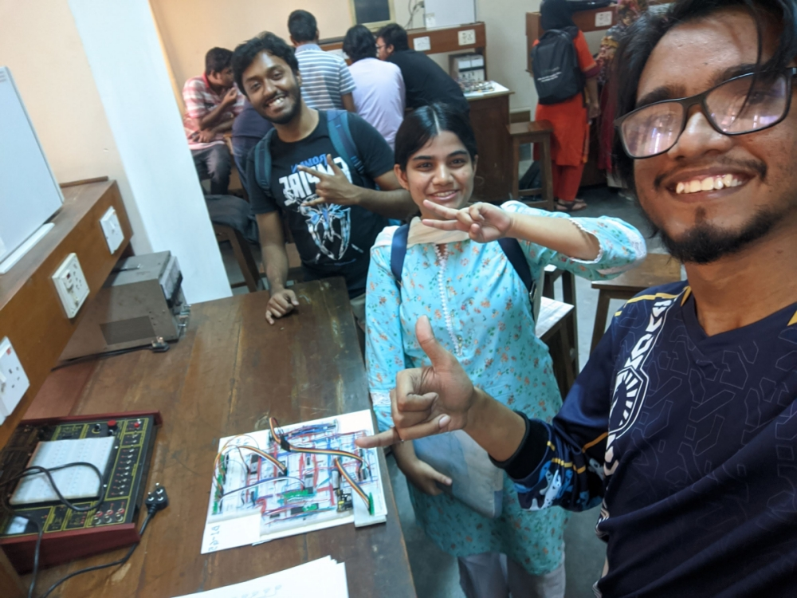

4-Bit MIPS CPU
A hardware implementation of a 4-bit CPU that runs on the MIPS instruction set
Introduction
This assignment focused on designing a 4-bit processor implementing a reduced MIPS instruction set architecture (ISA). The processor performs arithmetic, logical, and I/O operations in one clock cycle per instruction. Key components designed include a 4-bit ALU, program counter, instruction memory, data memory, register files, and a control unit.

Hardware implimentation.
Key Features
- A simplified 16-bit MIPS instruction set.
- Modular components for instruction execution.
- Efficient datapath for instruction fetching and execution.
Components
1. 4-bit Arithmetic Logic Unit (ALU)
- Functionality: Performs all arithmetic (e.g., addition, subtraction) and logical operations (e.g., AND, OR).
- Use:
- Address calculations for memory operations.
- Jump and branch address computations.
- Features: Produces outputs and a zero flag to indicate branching conditions.
Diagram:

4-bit ALU design.
2. Program Counter (PC)
- Functionality: A 4-bit D flip-flop storing the address of the current instruction.
- Operation: Automatically increments by 1 after each instruction. Resets to 0 on system restart.
Diagram:

Program Counter design.
3. Instruction Memory
- Role: Stores prefetch instructions in a 16-bit format, divided into:
- Opcode (4 bits).
- Register addresses or immediate values (12 bits).
- Operation: Outputs instructions incrementally based on the program counter.
Diagram:

Instruction Memory design.
4. Data Memory
- Functionality: Main memory storing 4-bit data values.
- Operation:
- Read operations (
lwinstruction). - Write operations (
swinstruction).
- Read operations (
Diagram:

Data Memory design.
5. Register Files
- Registers Used: $zero, $t0, $t1, $t2, $t3, $t4.
- Functionality: Temporary storage for intermediate values during execution.
- Operation: Supports two read ports and one write port per clock cycle.
Diagram:

Register Files design.
6. Control Unit
- Role: Generates control signals for directing operations in the processor.
- Features:
- Selector bits for multiplexers (MUXs).
- ALU control signals based on opcode.
Diagram:

Control Unit design.
Instruction Formats
Instruction Types
- R-Type: Arithmetic operations using registers.
- I-Type: Data transfer and immediate value operations.
- J-Type: Jump operations.
- S-Type: Custom format for shift operations.
Format Details
- R-Type:
-
`Opcode (4 bits)` `Src Reg 1 (4 bits)` `Src Reg 2 (4 bits)` `Dest Reg (4 bits)`
-
- S-Type:
-
`Opcode (4 bits)` `Src Reg 1 (4 bits)` `Dest Reg (4 bits)` `Shift Amount (4 bits)`
-
- I-Type:
-
`Opcode (4 bits)` `Src Reg 1 (4 bits)` `Src/Dest Reg (4 bits)` `Address/Immediate (4 bits)`
-
- J-Type:
-
`Opcode (4 bits)` `Target Jump Address (8 bits)` `Unused (4 bits)`
-
Execution Workflow
Machine Code Generation
- Write assembly code in `assembly1.txt`.
- Generate `.hex` and `.bin` files using the provided C program.
Simulation
- Software: Load `.hex` file into Logisim-ITA to simulate.
- Hardware: Burn instructions onto ATMEGA32 microcontroller.
Execution
- Provide clock pulses for instruction fetching and execution.
- Observe outputs on both simulation and hardware setups.
IC Count
| Component | IC Used | Quantity | |——————————-|—————|———-| | Quad 2-to-1 Line MUX | IC74157 | 8 | | 4-bit Adder | IC7483 | 4 | | 8-bit D Flip-Flop | IC74273 | 1 | | Microcontroller | ATMEGA32 | 5 |
Discussion
- Achievements:
- Designed a reduced MIPS instruction set processor with added S-type instructions.
- Successfully implemented stack pointer ($sp) functionality.
- Challenges:
- Ensured all hardware connections were intact through rigorous testing.
- Debugged simulation and hardware inconsistencies.
- Learnings:
- Gained an in-depth understanding of MIPS instructions and datapath design.
- Improved skills in both software simulation and hardware implementation.
Overall Circuit Diagram:

Overall Datapath with Control.
Stack Operations
- Push: Stores a register value onto the stack and decrements `$sp`.
subi $sp, $sp, 1 sw $tx, 0($sp) - Pop: Loads a value from the stack and increments `$sp`.
lw $tx, 0($sp) addi $sp, $sp, 1

Cringe selfie after being awake for several nights.